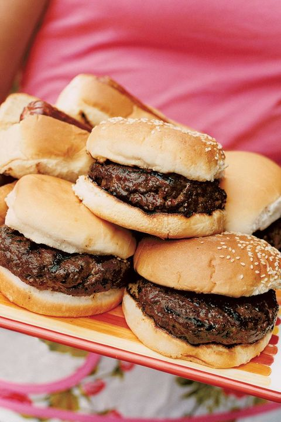

Burger Recipe

Description
Burgers are reported to have originated from Germany and the United States.
Burgers consists of a meat in patty form that is encased between two hamburger buns.
Burgers are eaten all over the world. Some people put things like cheese in their burgers.
Bacon is also a fan favorite item to place inside of a burger.
Ingredients
- Buns
- Ground Beef
- Tomatoes
- Salt
- Pepper
- Oregano
- Lettuce
- Butter
- Bread Crumbs
- Parsley
Steps
- First step is to mix the salt, pepper, oregano, bread crumbs, and parsley with the ground beef.
- Form the ground beef into patty form.
- Place butter in pan at 375 degrees fahrenheit. Once butter melts add the patties to the pan.
- Cook patty on each side for 3-5 minutes, until inside temperature reaches 160 degrees fahrenheit.
- Remove patties from pan and place them on buns.
- Place the tomataoes and lettuce onto the patties.
- Now you got yourself a burger!